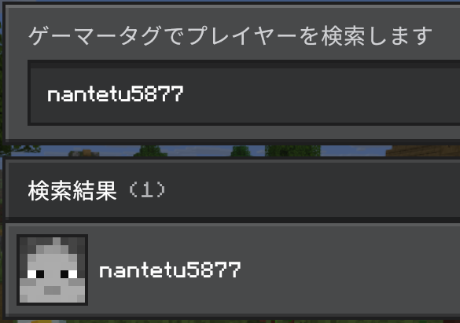
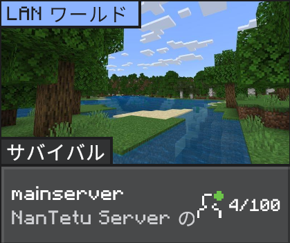

サーバーへの参加手順
サーバーへの参加方法は2種類あります。「サーバーを追加」する方法が最もおすすめです。
-
方法1. フレンドから参加 (推奨)
「プレイ」から「ソーシャル」を押し、「プレイヤーを探す」を選択します。
nantetu5877を入力して検索し、フレンド申請を送ってください。数秒後、承認されると、「ワールド」タブにサーバーが表示されます。ゲーマータグ
nantetu5877注意: この方法は障害などにより自動で承認されない場合があります。その際は、お手数ですが 方法2 で参加をしてください。

-
方法2. サーバーを追加
Minecraftを起動し、「プレイ」から「サーバー」タブを開きます。一番下までスクロールし、「サーバーを追加」ボタンを押してください。
以下の情報を入力して「保存」します。リストにサーバーが追加されたら、選択して「サーバーに参加」を押してください。
状態確認中...IPアドレス
nantetu123.f5.siポート番号
5346
-
完了! サーバーへようこそ！
サーバーに参加したら、まずはチャットに送信されるルールを見ましょう。
ルールを理解したら、建築場所を探しに移動してください。わからないことがあれば、Discordやチャットで質問しましょう！
コマンド
/warpで、様々な公共施設への移動も可能です。